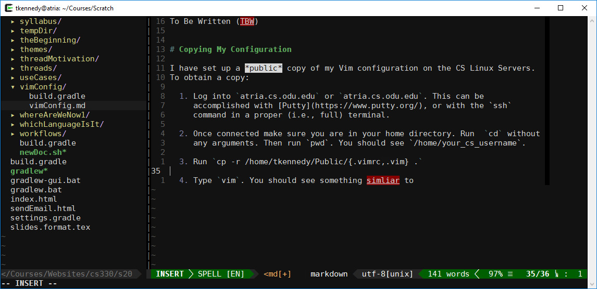

Getting Started with Vim
Thomas J. Kennedy
Over the past few years… I have switched to using Vim as my editor… for everything. This includes writing code/markup in:
- C++
- Java
- Python
- Rust (the programming language, not the game)
- Markdown
- LaTeX
1 My Configuration
To Be Written (TBW)
2 Copying My Configuration
I have set up a public copy of my Vim configuration on the CS Linux Servers. To obtain a copy:
-
Log into
atria.cs.odu.eduoratria.cs.odu.edu. This can be accomplished with Putty, or with thesshcommand in a proper (i.e., full) terminal. -
Once connected make sure you are in your home directory. Run
cdwithout any arguments. Then runpwd. You should see/home/your_cs_username. -
Run
cp -r /home/tkennedy/Public/{.vimrc,.vim} . -
Type
vim. You should see something similar to  -
To exit, press the
escape key, enter:qa, and press theenter key.